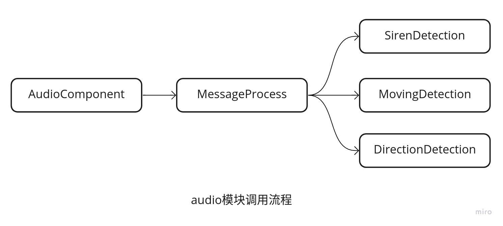

2. Audio
勤学如春起之苗，不见其增，日有所长。
2.1. Table of Contents
Audio模块介绍
输入输出
目录结构
模块入口
消息处理（MessageProcess）
声音识别（SirenDetection）
移动检测(MovingDetection)
方向检测(DirectionDetection)
工具（tools）
2.2. Audio模块介绍
audio模块是Apollo 6.0新增加的模块，主要的用途是通过声音来识别紧急车辆（警车，救护车，消防车）。目前的功能还相对比较简单，只能识别单个紧急车辆，同时需要环境风速低于20mph。下面我们会详细分析这个模块的原理以及实现。
2.2.1. 输入输出
audio模块的输入是/apollo/sensor/microphone，输入的消息来源于”drivers/microphone”，用到的硬件模块是”RESPEAKER”，目前有双通道和四通道，Apollo用到的硬件是四通道，关于硬件的相关介绍，会在”drivers/microphone”中进行说明。
audio模块的输出是/apollo/audio_detection，输出的消息包括：是否检测到紧急车辆，检测到紧急车辆的移动类型（接近还是远离），位置以及角度。
也就是说audio模块单纯的通过声音来识别有没有紧急车辆，以及紧急车辆的位置，为无人驾驶车的感知添加了新的维度。语音交互在车机智能里是非常好的交互方式，目前面临的主要难点是汽车里噪音的影响，这在通过声音进行感知的时候尤其重要。
2.3. 目录结构
audio模块的目录结构如下，整体来说并不复杂，主要的逻辑在”inference”中。
├── audio_component.cc
├── audio_component.h // 模块入口
├── BUILD
├── common
├── conf
├── dag
├── data // 模型文件
├── inference // 推理
├── launch
├── proto // 消息格式
├── README.md
└── tools // 工具
Audio模块为事件驱动，当接受到驱动模块的声音输入的时候，就开始解析声音，并且输出结果，下面我们来详细分析具体的处理过程。 audio模块的整体调用流程如图： 
2.3.1. 模块入口
audio模块通过”Init()”进行初始化，主要是读取录音机的外参，并且创建”audio_writer_”用于发布消息。初始化好之后，接着通过”Proc”来处理消息。处理的过程通过”OnMicrophone”来完成。
bool AudioComponent::Proc(const std::shared_ptr<AudioData>& audio_data) {
// TODO(all) remove GetSignals() multiple calls
AudioDetection audio_detection;
MessageProcess::OnMicrophone(*audio_data, respeaker_extrinsics_file_,
&audio_info_, &direction_detection_, &moving_detection_,
&siren_detection_, &audio_detection);
FillHeader(node_->Name(), &audio_detection);
audio_writer_->Write(audio_detection);
return true;
}
2.3.2. 消息处理（MessageProcess）
MessageProcess类实际上是推理模块的一个集合，具体的任务实际上还是在”inference”目录中完成的，主要有3个类，分别为
SirenDetection - 通过深度学习的方法，判断是否是紧急车辆声音。
MovingDetection - 通过声音强度信息和多普勒效应，来判断车辆是靠近还是远离。
DirectionDetection - 通过多个通道之间的差异，计算声音的方向。
下面我们开始分别介绍这3个功能。
2.4. 声音识别（SirenDetection）
声音识别SirenDetection类中只有2个函数, LoadModel进行模型的加载，模型文件在”audio/data”目录中。
class SirenDetection {
public:
bool Evaluate(const std::vector<std::vector<double>>& signals);
private:
void LoadModel();
Evaluate函数对多个通道声音进行处理，然后输入到模型，并且得出正向和反向的结果，当正向的分数大于反向的时候，则表示检测到了特殊车辆。
bool SirenDetection::Evaluate(const std::vector<std::vector<double>>& signals) {
// 1. 读取4个通道的数据，装入audio_tensor中
torch::Tensor audio_tensor = torch::empty(4 * 1 * 72000);
float* data = audio_tensor.data_ptr<float>();
for (const auto& channel : signals) {
for (const auto& i : channel) {
*data++ = static_cast<float>(i) / 32767.0;
}
}
// 2. 转换声音为张量
torch::Tensor torch_input = torch::from_blob(audio_tensor.data_ptr<float>(),
{4, 1, 72000});
std::vector<torch::jit::IValue> torch_inputs;
torch_inputs.push_back(torch_input.to(device_));
// 3. 模型推理
at::Tensor torch_output_tensor = torch_model_.forward(torch_inputs).toTensor()
.to(torch::kCPU);
auto torch_output = torch_output_tensor.accessor<float, 2>();
// 4. 投票表决
float neg_score = torch_output[0][0] + torch_output[1][0] +
torch_output[2][0] + torch_output[3][0];
float pos_score = torch_output[0][1] + torch_output[1][1] +
torch_output[2][1] + torch_output[3][1];
if (neg_score < pos_score) {
return true;
} else {
return false;
}
}
2.5. 移动检测(MovingDetection)
移动检测在”MovingDetection”类中实现，通过检测最近3帧的声音强度和声音频率，来判断紧急车辆是接近还是远离。MovingDetection中主要有3个函数。
// 1. 快速傅里叶变换
std::vector<std::complex<double>> fft1d(const std::vector<double>& signals);
// 2. 移动检测
MovingResult Detect(const std::vector<std::vector<double>>& signals);
// 3. 检测单个通道
MovingResult DetectSingleChannel(
const std::size_t channel_index, const std::vector<double>& signal);
快速傅里叶变换在fft1d中完成，主要是把时域的东西转换到频域，在这里主要是为了得到声音的频率。
接下来我们看”DetectSingleChannel”的实现。
MovingResult MovingDetection::DetectSingleChannel(
const std::size_t channel_index, const std::vector<double>& signals) {
static constexpr int kStartFrequency = 3;
static constexpr int kFrameNumStored = 10;
std::vector<std::complex<double>> fft_results = fft1d(signals);
// 1. 获取声音信息
SignalStat signal_stat = GetSignalStat(fft_results, kStartFrequency);
signal_stats_[channel_index].push_back(signal_stat);
while (static_cast<int>(signal_stats_[channel_index].size()) >
kFrameNumStored) {
signal_stats_[channel_index].pop_front();
}
// 2. 分析声音强度
MovingResult power_result = AnalyzePower(signal_stats_[channel_index]);
if (power_result != UNKNOWN) {
return power_result;
}
// 3. 分析声音频率
MovingResult top_frequency_result =
AnalyzeTopFrequence(signal_stats_[channel_index]);
return top_frequency_result;
}
可以看到单个通道先通过”GetSignalStat”获取声音信息，并且优先采用声音强度信息，然后采用声音频率。
我们接着上一步骤看如何获取声音强度和声音频率。
MovingDetection::SignalStat MovingDetection::GetSignalStat(
const std::vector<std::complex<double>>& fft_results,
const int start_frequency) {
double total_power = 0.0;
int top_frequency = -1;
double max_power = -1.0;
for (int i = start_frequency; i < static_cast<int>(fft_results.size()); ++i) {
double power = std::abs(fft_results[i]);
// 1. 对一段时间的声音强度做累加
total_power += power;
// 2. 找出一段时间内声音强度最大的作为当时的频率
if (power > max_power) {
max_power = power;
top_frequency = i;
}
}
return {total_power, top_frequency};
}
“AnalyzePower”和”AnalyzeTopFrequence”的逻辑相对简单，就是判断过去的三帧，声音强度是否一直减少、增大，频率是否一直减少、增大。以此来判断汽车是远离还是靠近。
最后”Detect”函数会综合4个通道的数据来进行投票表决，然后得到汽车是远离还是靠近，最后输出结果。
2.6. 方向检测(DirectionDetection)
在”DirectionDetection”类中对紧急车辆的方向进行估计，通过2个通道的差异和声音的速度，就可以得到车辆的大概位置。 DirectionDetection类的主要实现在”EstimateSoundSource”函数中，下面我们来分析下具体的实现。
std::pair<Point3D, double> DirectionDetection::EstimateSoundSource(
std::vector<std::vector<double>>&& channels_vec,
const std::string& respeaker_extrinsic_file, const int sample_rate,
const double mic_distance) {
// 1. 加载外参
if (!respeaker2imu_ptr_.get()) {
respeaker2imu_ptr_.reset(new Eigen::Matrix4d);
LoadExtrinsics(respeaker_extrinsic_file, respeaker2imu_ptr_.get());
}
// 2. 计算方向角度
double degree =
EstimateDirection(move(channels_vec), sample_rate, mic_distance);
// 3. 计算距离
Eigen::Vector4d source_position(kDistance * sin(degree),
kDistance * cos(degree), 0, 1);
source_position = (*respeaker2imu_ptr_) * source_position;
Point3D source_position_p3d;
source_position_p3d.set_x(source_position[0]);
source_position_p3d.set_y(source_position[1]);
source_position_p3d.set_z(source_position[2]);
degree = NormalizeAngle(degree);
return {source_position_p3d, degree};
}
那么如何计算方向角度呢？ 下面我们看下”EstimateDirection”的实现。
double DirectionDetection::EstimateDirection(
std::vector<std::vector<double>>&& channels_vec, const int sample_rate,
const double mic_distance) {
// 1. 把声音数据放入channels_ts
std::vector<torch::Tensor> channels_ts;
auto options = torch::TensorOptions().dtype(torch::kFloat64);
int size = static_cast<int>(channels_vec[0].size());
for (auto& signal : channels_vec) {
channels_ts.push_back(torch::from_blob(signal.data(), {size}, options));
}
double tau0, tau1;
double theta0, theta1;
const double max_tau = mic_distance / kSoundSpeed;
// 2. 分别计算通道0和2,1和3的组合来得出角度
tau0 = GccPhat(channels_ts[0], channels_ts[2], sample_rate, max_tau, 1);
theta0 = asin(tau0 / max_tau) * 180 / M_PI;
tau1 = GccPhat(channels_ts[1], channels_ts[3], sample_rate, max_tau, 1);
theta1 = asin(tau1 / max_tau) * 180 / M_PI;
int best_guess = 0;
// 3. 得到最优解
if (fabs(theta0) < fabs(theta1)) {
best_guess = theta1 > 0 ? std::fmod(theta0 + 360, 360) : (180 - theta0);
} else {
best_guess = theta0 < 0 ? std::fmod(theta1 + 360, 360) : (180 - theta1);
best_guess = (best_guess + 90 + 180) % 360;
}
best_guess = (-best_guess + 480) % 360;
return static_cast<double>(best_guess) / 180 * M_PI;
}
计算2个通道，从而得到角度信息的实现如下。
double DirectionDetection::GccPhat(const torch::Tensor& sig,
const torch::Tensor& refsig, int fs,
double max_tau, int interp) {
const int n_sig = sig.size(0), n_refsig = refsig.size(0),
n = n_sig + n_refsig;
torch::Tensor psig = at::constant_pad_nd(sig, {0, n_refsig}, 0);
torch::Tensor prefsig = at::constant_pad_nd(refsig, {0, n_sig}, 0);
psig = at::rfft(psig, 1, false, true);
prefsig = at::rfft(prefsig, 1, false, true);
ConjugateTensor(&prefsig);
// 1. 复数相乘
torch::Tensor r = ComplexMultiply(psig, prefsig);
// 2. 复数取绝对值
torch::Tensor cc =
at::irfft(r / ComplexAbsolute(r), 1, false, true, {interp * n});
int max_shift = static_cast<int>(interp * n / 2);
if (max_tau != 0)
max_shift = std::min(static_cast<int>(interp * fs * max_tau), max_shift);
auto begin = cc.index({Slice(cc.size(0) - max_shift, None)});
auto end = cc.index({Slice(None, max_shift + 1)});
cc = at::cat({begin, end});
// find max cross correlation index
const int shift = at::argmax(at::abs(cc), 0).item<int>() - max_shift;
const double tau = shift / static_cast<double>(interp * fs);
return tau;
}
Todo: 关于上述过程的详细计算原理，之后需要做进一步的补充？？？
2.7. 工具（tools）
tools目录提供了一些录制和调试工具。
audiosaver.py - 录制声音并且保存。
audio_offline_processing.cc - 离线测试工具，提供audio模块的离线功能。
至此，我们就得到了是否有紧急车辆，以及车辆的移动方式和方向。实际上audio模块的代码中还遗留有位置信息、感知的结果，估计后面会增加一些新的融合功能。
整体上audio模块还是挺有意思的，当然声音的识别，以及在嘈杂环境如何获取到比较关注的声音，都是业界研究的热点方向，但主要还是集中在室内对人的声音的追踪，室外以及对车或者后续增加到人的场景，还有待发掘。